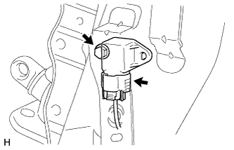

ЗАДНИЙ ДАТЧИК УСКОРЕНИЯ > УСТАНОВКА |
| 1. УСТАНОВИТЕ ЗАДНИЙ ДАТЧИК УСКОРЕНИЯ |
|  |
Установите задний датчик ускорения и закрепите его болтом, как показано на рисунке.
Подсоедините разъем.
| 2. УСТАНОВИТЕ ЛЕВУЮ БОКОВУЮ ОБЛИЦОВОЧНУЮ ПАНЕЛЬ ПОЛКИ БАГАЖНОГО ОТДЕЛЕНИЯ В СБОРЕ |
Для 3-дверных моделей:
(Нажмите здесь).
Для 5-дверных моделей:
(Нажмите здесь).
| 3. ПОДСОЕДИНИТЕ ПРОВОД К ОТРИЦАТЕЛЬНОМУ ВЫВОДУ АККУМУЛЯТОРНОЙ БАТАРЕИ |